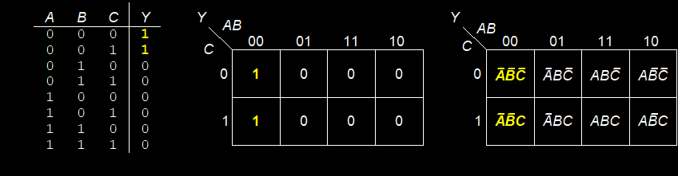
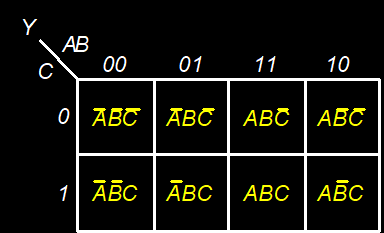

| # | Theorem | Dual | Name |
|---|---|---|---|
| T6 | B•C = C•B | B+C = C+B | Commutativity |
| T7 | (B•C) • D = B • (C•D) | (B + C) + D = B + (C + D) | Associativity |
| T8 | B • (C + D) = (B•C) + (B•D) | B + (C•D) = (B+C) (B+D) | Distributivity |
| T9 | B • (B+C) = B | B + (B•C) = B | Covering |
| T10 | (B•C) + (B•C’) = B | (B+C) • (B+C’) = B | Combining |
| T11 | (B•C) + (B’•D) + (C•D) = (B•C) + (B’•D) | (B+C) • (B’+D) • (C+D) = (B+C) • (B’+D) | Consensus |
Warning: T8’ differs from traditional algebra: OR (+) distributes over AND (•)
Expansion
P = PA’ + PA
A = A + AP
Duplication
A = A + A
“Simplification” theorem
PA’ + A = P + A
PA + A’ = P + A’
Y = AB + BC + B’D’ + AC’D’
Y = AB + BC + B’D’ + (ABC’D’ + AB’C’D’) (T10: Combining)
= (AB + ABC’D’) + BC + (B’D’ + AB’C’D’) (T6: Commutativity, T7: Associativity)
= AB + BC + B’D’ (T9: Covering)
Y = (A + BC)(A + DE)
Apply T8’ first when possible: W+XZ = (W+X)(W+Z)
Y = (A+X)(A+Z) substitution (X=BC, Z=DE)
= A + XZ (T8’: Distributivity)
= A + BCDE (substitution)
A function’s truth-table representation is unique; its algebraic expression is not.
Simplification reduces the number of gates used to physically implement the function, thus making it smaller, cheaper, and possibly faster.
Simplification by algebraic means is awkward (from algorithmic point of view).
The basic principle of simplifying sum-of-products equations is to combine terms using the relationship $PA + P\bar{A} = P$, where $P$ may be any implicant.
We define an equation in sum-of-products form to be minimized if it uses the fewest possible implicants.
If there are several equations with the same number of implicants, the minimal one is the one with the fewest literals.
Complement: variable with a dash or bar
An implicant is called a prime implicant if it cannot be combined with any other implicants in the equation to form a new implicant with fewer literals.
If a minterm in a square is covered by only one prime implicant, that prime implicant is said to be essential.
The implicants in a minimal equation must all be essential prime implicants.
Boolean expressions can be minimized by combining terms
K-maps minimize equations graphically
Prime implicant: implicant corresponding to the largest circle in a K-map
makes combinable terms easy to see by putting them next to each other in a grid.
an array of squares each representing one minterm.
each square, or minterm, differs from an adjacent square by a change in a single variable.
adjacent squares share all the same literals except one, which appears in true form in one square and in complementary form in the other
a K-map “wraps around”

Circle 1’s in adjacent squares
In Boolean expression, include only literals whose true and complement form are not in the circle

A B C | Y
----------
0 0 0 | 0
0 0 1 | 0
0 1 0 | 1
0 1 1 | 1
1 0 0 | 0
1 0 1 | 0
1 1 0 | 0
1 1 1 | 1
A B C | Y
----------
0 0 0 | 1
0 0 1 | 1
0 1 0 | 0
0 1 1 | 0
1 0 0 | 0
1 0 1 | 0
1 1 0 | 0
1 1 1 | 0
A B C | Y
----------
0 0 0 | 1
0 0 1 | 1
0 1 0 | 0
0 1 1 | 0
1 0 0 | 1
1 0 1 | 1
1 1 0 | 1
1 1 1 | 0
$F(A,B,C) = \sum (0,2,4,5,6)$
$F(A,B,C) = \sum (1,3,4,5,6)$
$F(A,B,C,D) = \sum (0,2,3,5,6,7,8,9,10)$
$F(A,B,C,D) = \sum (0,1,2,4,5,6,8,9,12,13,14)$
$F(A,B,C,D) = \sum (0,1,2,6,8,9,10)$
A B C D | Y
-----------
0 0 0 0 | 1
0 0 0 1 | 0
0 0 1 0 | 1
0 0 1 1 | 1
0 1 0 0 | 0
0 1 0 1 | X
0 1 1 0 | 1
0 1 1 1 | 1
1 0 0 0 | 1
1 0 0 1 | 1
1 0 1 0 | X
1 0 1 1 | X
1 1 0 0 | X
1 1 0 1 | X
1 1 1 0 | X
1 1 1 1 | X